5 Model evaluation
library(tidyverse)
library(dcldata)
library(robustbase)
library(rstanarm)
library(tidymodels)
tidymodels_prefer()After you’ve used EDA to understand your data and identify potential function families with which to model, you can fit models for each of these function families. In this chapter, we’ll show you how to compare and evaluate the resulting models.
Our exploration in Chapter 2 led us to focus on the following subset of the diamonds dataset, which we will use below. In addition, we will convert the ordered factors into unordered factors so that their model coefficients will be interpretable.
df <-
diamonds %>%
filter(x > 0, y > 0, z > 0) %>%
filter(y < 20, z < 10) %>%
filter(carat <= quantile(.$carat, probs = 0.99)) %>%
mutate(
color = fct_rev(color),
color_combined = fct_collapse(color, "DEFG" = c("D", "E", "F", "G")),
across(where(is.ordered), ~ factor(., ordered = FALSE))
)In Chapter 3, we explored the relationship of price to the four Cs: carat, clarity, color, and cut. We saw that the relationship of price to the continuous variable carat could be approximated with a power law. We saw that the other three the discrete variables were suitable for inclusion into a linear model, with clarity being the most important, followed by color, and then cut. Finally, we saw that the colors with quality greater than G didn’t influence price much, which led to the color_combined variable where we collapsed the colors D, E, F, and G into one value.
We can therefore consider the following function families with which to model.
formulas <-
tribble(
~formula,
"log(price) ~ log(carat)",
"log(price) ~ log(carat) + clarity",
"log(price) ~ log(carat) + clarity + color_combined",
"log(price) ~ log(carat) + clarity + color",
"log(price) ~ log(carat) + clarity + color + cut"
) %>%
rowwise() %>%
mutate(
n_coefs =
model.matrix(as.formula(formula), data = df %>% slice(1)) %>% ncol()
) %>%
ungroup()
knitr::kable(formulas)| formula | n_coefs |
|---|---|
| log(price) ~ log(carat) | 2 |
| log(price) ~ log(carat) + clarity | 9 |
| log(price) ~ log(carat) + clarity + color_combined | 12 |
| log(price) ~ log(carat) + clarity + color | 15 |
| log(price) ~ log(carat) + clarity + color + cut | 19 |
The n_coefs column contains the number of coefficients or parameters for the function family and ranges from two, for the simplest family we used in last chapter, to 19 for the most complex function family. Each function family in the list includes all of the functions in the function families above it. You might ask, why not just use the most complex function family, since it contains all the functions of the simpler families? We’ll explain why in the next section.
But before we can discuss model evaluation, we need to specify the purpose for our modeling. We will assume that our goal is to create a model using the data we have to make accurate predictions on new data.
5.1 Model overfitting
For this section, we will seek to model blood pressure as a function of age. The data we’ll use are from the National Health and Nutrition Examination Survey (NHANES) 2017-2018 and are in the dcldata package.
blood_pressure
#> # A tibble: 6,144 × 5
#> seqn ridageyr bpxosy1 bpxosy2 bpxosy3
#> <dbl> <dbl> <dbl> <dbl> <dbl>
#> 1 93705 66 164 165 172
#> 2 93706 18 126 128 133
#> 3 93707 13 136 133 139
#> 4 93708 66 146 142 151
#> 5 93709 75 120 124 113
#> 6 93711 56 112 112 109
#> # … with 6,138 more rowsHere are the variables:
seqn: Respondent sequence numberridageyr: Age in years at screening. All participants aged 80 years and older are coded as 80.bpxosy1: Systolic blood pressure - 1st oscillometric readingbpxosy2: Systolic blood pressure - 2nd oscillometric readingbpxosy3: Systolic blood pressure - 3rd oscillometric reading
Since we don’t know the actual age for participants with rigageyr variable equal to 80, we will only consider those age 79 and younger. The blood pressure variable we’ll model will be a new variable bpxosy that is the mean of the three systolic blood pressure measurements.
bp_all <-
blood_pressure %>%
filter(ridageyr <= 79) %>%
rowwise() %>%
mutate(bpxosy = mean(c(bpxosy1, bpxosy2, bpxosy3), na.rm = TRUE)) %>%
ungroup() %>%
select(!matches("bpxosy\\d")) %>%
arrange(seqn)
bp_all
#> # A tibble: 5,851 × 3
#> seqn ridageyr bpxosy
#> <dbl> <dbl> <dbl>
#> 1 93705 66 167
#> 2 93706 18 129
#> 3 93707 13 136
#> 4 93708 66 146.
#> 5 93709 75 119
#> 6 93711 56 111
#> # … with 5,845 more rowsn <- 200We’ll now create a random sample of 200 participants, bp_model, and we’ll assume that this sample is all the data we have to work with to create our model. We’ll use the remaining data, bp_new, to judge how well the model would predict on new data.
set.seed(950)
bp_model <-
bp_all %>%
sample_n(size = n) %>%
arrange(seqn)
bp_new <-
bp_all %>%
anti_join(bp_model, by = "seqn") %>%
arrange(seqn)bp_model and bp_new partition bp_all into two disjoint datasets.
is_empty(intersect(bp_model$seqn, bp_new$seqn))
#> [1] TRUE
setequal(bp_all$seqn, union(bp_model$seqn, bp_new$seqn))
#> [1] TRUEOur first step is to use EDA to understand the data and potential function families with which to model it.
bp_model %>%
ggplot(aes(ridageyr, bpxosy)) +
geom_point() +
geom_smooth() +
labs(
title = "Smooth line",
x = "Age (years)",
y = "Systolic blood pressure (mm Hg)"
)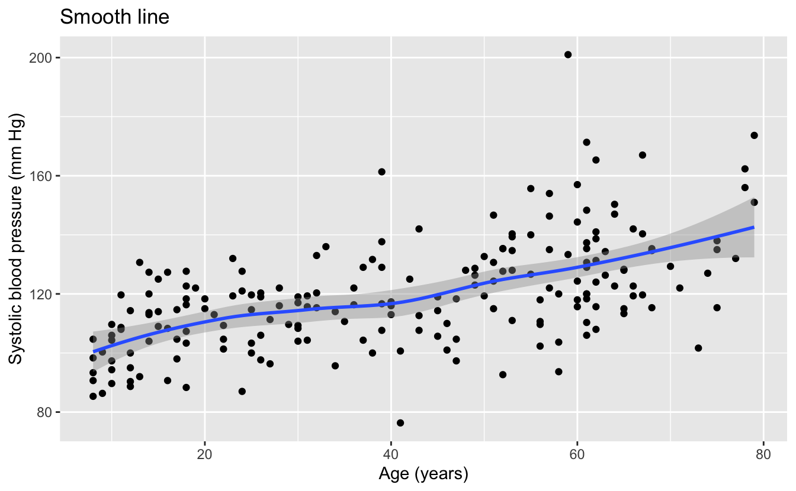
We can see that the smooth line of the data is quite linear, indicating that linear functions could be a promising function family with which to model the data.
We can also see from the data that we should definitely not use lm() or any other method that uses the least squares algorithm. The least squares algorithm assumes that the errors or residuals are normally distributed with a constant standard deviation. The data has a wide dispersion and outliers that are not consistent with a normal distribution, and the variation in the data appears to increase with increasing age. For these reasons, we will model this data with the function lmrob() from the robustbase package. This function is designed to work with data where the least squares assumptions do not hold.
Though the function family of linear functions seems promising for this data, we’d like to explore the use of more complex functions. For this purpose, we will use higher degree polynomials. Unless your understanding of the data calls for a polynomial, these are rarely a good choice for modeling function families, especially higher degree polynomials, but we are choosing them to illustrate a point.
Let’s first use EDA to see the models from the function families of polynomials up to degree six.
plot_poly <- function(degree) {
predictions <-
tibble(
ridageyr =
seq(min(bp_model$ridageyr), max(bp_model$ridageyr), length.out = 201),
bpxosy =
lmrob(
bpxosy ~ poly(ridageyr, degree = degree),
data = bp_model
) %>%
predict(newdata = tibble(ridageyr))
)
bp_model %>%
ggplot(aes(ridageyr, bpxosy)) +
geom_point() +
geom_line(data = predictions, color = "blue", size = 1) +
labs(
title = str_glue("Polynomial model of degree {degree}"),
x = "Age (years)",
y = "Systolic blood pressure (mm Hg)"
)
}
1:6 %>%
map(plot_poly) %>%
walk(print)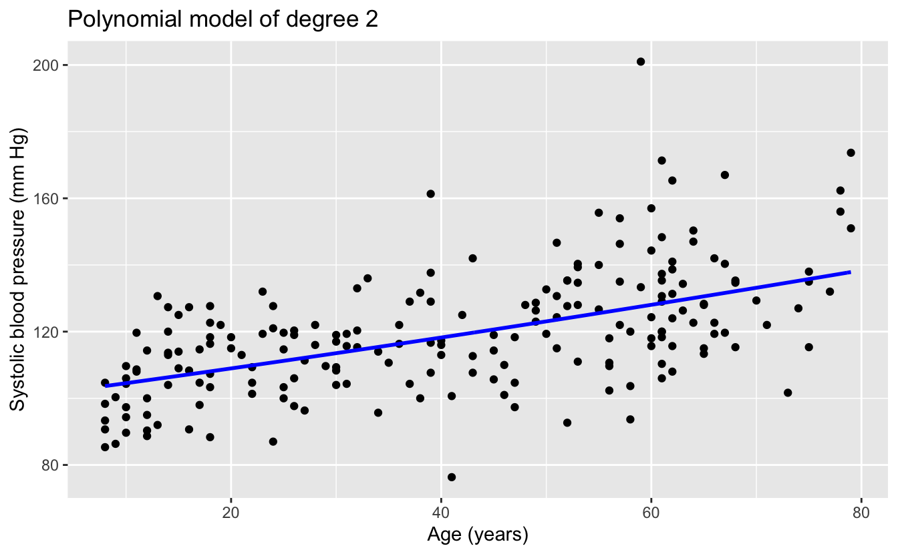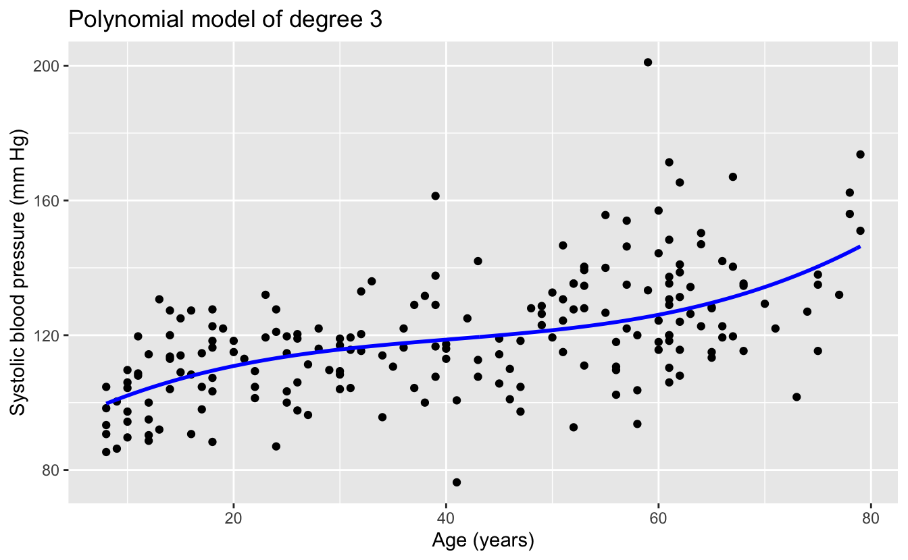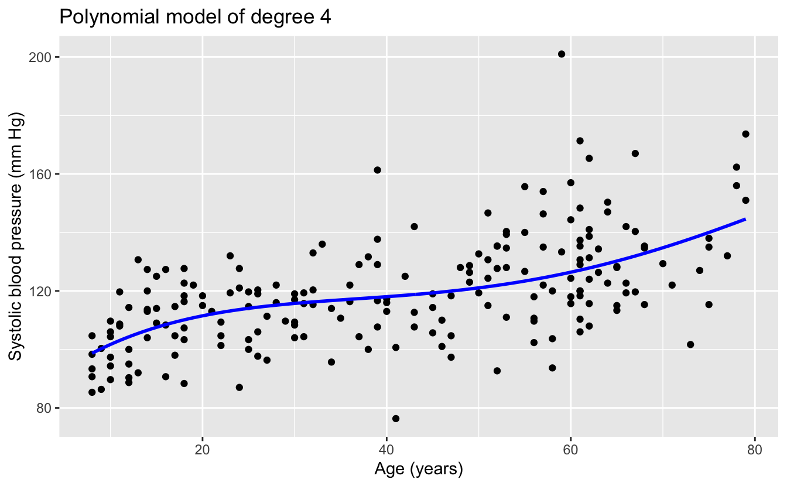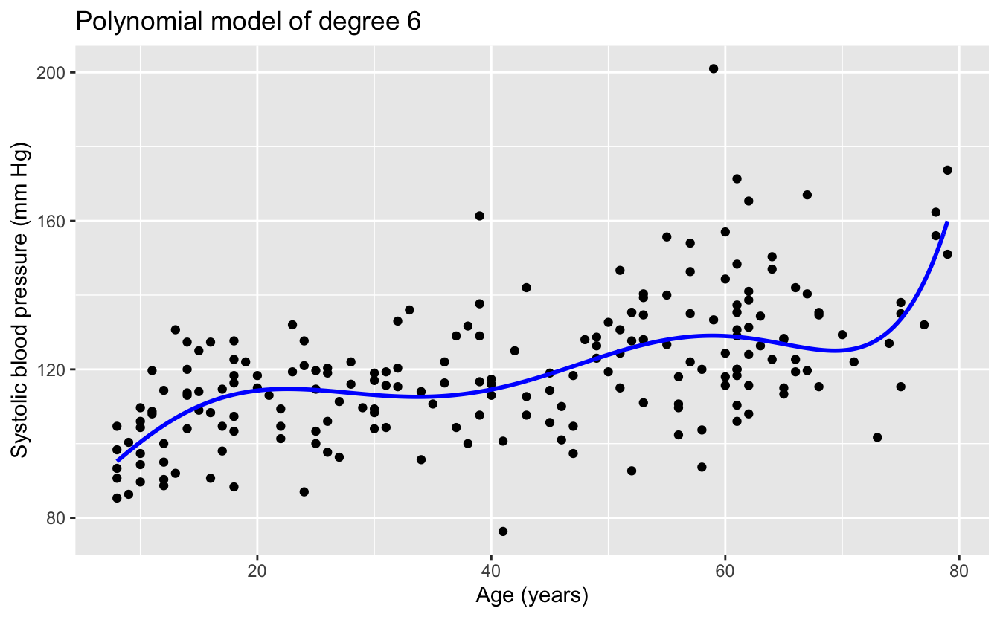
The linear and quadratic models are very similar. As the degree of the polynomials increases, the fits seem increasingly implausible.
Recall that our goal is to create a model that will make accurate predictions on new data. We have new data in bp_new, which lmrob() did not see when creating the models. So we can make predictions on this new data and compare the predictions to the actual measured blood pressures.
Recall from Chapter 1 that the differences between the predictions and the actual response are called residuals. There are different metrics for measuring the residuals, including the root mean squared error (RMSE)
sqrt(mean(residuals^2))
and the mean absolute error (MAE)
mean(abs(residuals)) .
Since our data has outliers, we will use the more robust mean absolute error.
Here’s the calculation of the MAE for the predictions of the six models above on the new data in bp_new.
bp_errors <-
tibble(formula = str_glue("bpxosy ~ poly(ridageyr, degree = {1:6})")) %>%
rowwise() %>%
mutate(
n_coefs = model.matrix(as.formula(formula), data = bp_model) %>% ncol(),
model = list(lmrob(as.formula(formula), data = bp_model)),
mae = mean(abs(bp_new$bpxosy - predict(model, newdata = bp_new)))
) %>%
ungroup() %>%
select(!model)And here’s a plot of the MAE against the number of model coefficients, a measure of model complexity.
bp_errors %>%
ggplot(aes(n_coefs, mae)) +
geom_line() +
geom_point() +
scale_y_continuous(labels = scales::label_number(accuracy = 0.01)) +
labs(
title = "Mean absolute error of model predictions on new data",
x = "Number of model coefficients",
y = "Mean absolute error"
)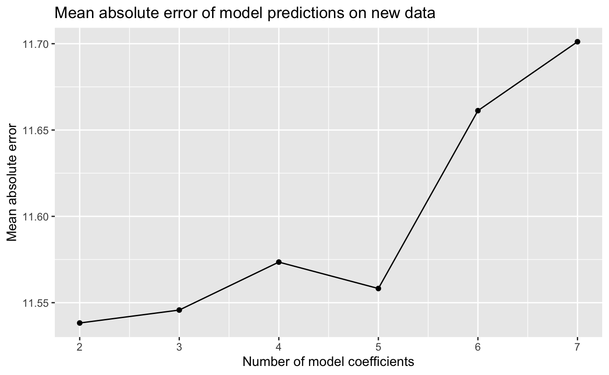
The simplest model, the linear model, had the best performance on new data, and the performance of the models worsened with increasing model complexity. Why did the more complex functions have worse performance? Consider the relationship of our sample data to new data. For each participant age, we can imagine that the blood pressure measurements in our random sample are a random sample of blood pressures from the population for those of that age. We saw that our data had considerable noise, so the random sample may not have been representative of the mean or median value of the population blood pressures for a given age. The more complexity a function family has, the greater its ability to fit the noise. Using a function family with too much complexity that results in fitting the noise is called overfitting. A model that is overfit will not generalize and work well on new data.
Model simplicity is a virtue. If the estimated predictive performance of two models is comparable, the simpler of the two is typically preferred, since it is more likely to generalize and work well on new data.
5.2 Model selection
We’ve chosen five function families with which to model the diamonds data. To select between the five resulting models, we will now estimate their predictive performance on new data. Classical modeling and Bayesian modeling take different approaches to this estimation.
5.2.1 Classical modeling
In classical modeling, estimates of the predictive performance of a model are typically made using cross-validation. The fundamental idea of cross-validation is to train your model using a portion of your original data, and to then measure the model’s predictions on the remaining data. The partitioning of the data into two disjoint sets can be done in different ways, common methods include:
- Monte Carlo: The training set is a random sample without replacement of the original data, and the test set is the remaining data. The modeler specifies the proportion of original data to use in the training set, typically between 75 - 80%.
- Bootstrap: The training set is a random sample with replacement of the original data for a resulting set the same size as the original data. The test set is the remaining data. In bootstrap, the proportion of original data used in the training set is approximately 63.2%.
- V-Fold: In this method, the original data is randomly partitioned into v disjoint sets of roughly equal size, called folds. The modeling is then done v times with each fold serving as test set and the remaining v - 1 folds serving as the training set. Typical values for v are 5 or 10, corresponding to 80% or 90% of the original data being used for the training set.
With Monte Carlo and bootstrap cross-validation, the train and test process is repeated multiple times with different random partitions. With v-fold cross-validation, the whole process of v repetitions can itself be repeated. In each of the three methods, the results of the repetitions are combined into an average estimate of predictive performance and a standard error.
For our diamonds data, we’ll use v-fold cross-validation with v = 10 folds and just one repeat. The vfold_cv() function in the tidymodels rsample package will do this for us.
set.seed(616)
resamples <- vfold_cv(data = df, v = 10)
resamples
#> # 10-fold cross-validation
#> # A tibble: 10 × 2
#> splits id
#> <list> <chr>
#> 1 <split [48064/5341]> Fold01
#> 2 <split [48064/5341]> Fold02
#> 3 <split [48064/5341]> Fold03
#> 4 <split [48064/5341]> Fold04
#> 5 <split [48064/5341]> Fold05
#> 6 <split [48065/5340]> Fold06
#> # … with 4 more rowsEach row of this tibble contains a partition or split of the data into two disjoint sets, one to train a model and the other to test the resulting model. For example, the first row contains a split of the 53,405 rows of df into 48,064 rows to fit or train a model, and the remaining 5,341 rows to test the resulting model.
The fit_resamples() function in the tidymodels tune package streamlines the process of fitting and testing a model for all rows in a set of resamples. Given a model specification and a set of resamples, this function will, for each row:
- Fit a model using the split training set.
- Make predictions using the split test set.
- Calculate the residuals of the predictions.
- Calculate a metric of the residuals; for example, the RMSE or MAE.
Of course, what we’re really interested in is not the individual metric for each resample model but rather a mean value of the metric for all the resample models and a standard error. This can be accomplished with the collect_metrics() function in the tidymodels tune package.
Putting this all together, we can get an estimate for how a model would perform on new data. For example, here’s an estimate of how the model produced by lm() for our simplest function family would perform on new data using the RMSE metric.
model_metric <- function(formula, engine = "lm", metric = rmse) {
workflow() %>%
add_model(linear_reg() %>% set_engine(engine)) %>%
add_formula(as.formula(formula)) %>%
fit_resamples(resamples = resamples, metrics = metric_set(metric)) %>%
collect_metrics()
}
v <- model_metric(log(price) ~ log(carat))
v
#> # A tibble: 1 × 6
#> .metric .estimator mean n std_err .config
#> <chr> <chr> <dbl> <int> <dbl> <chr>
#> 1 rmse standard 0.260 10 0.00130 Preprocessor1_Model1After fitting and testing resample models for each of the 10 rows of resamples and collecting the results, our RSME estimate for predictive performance is about 0.260 with a standard error of 0.00130.
This cross-validation estimate of how a model will perform on new data allows us to compare models from different function families. Let’s first calculate the estimates for all five of the function families we’re considering.
rmse_lm <-
formulas %>%
rowwise() %>%
mutate(model_metric(formula)) %>%
ungroup() %>%
select(formula, n_coefs, rmse = mean, rmse_se = std_err)
knitr::kable(rmse_lm)| formula | n_coefs | rmse | rmse_se |
|---|---|---|---|
| log(price) ~ log(carat) | 2 | 0.260 | 0.001 |
| log(price) ~ log(carat) + clarity | 9 | 0.187 | 0.001 |
| log(price) ~ log(carat) + clarity + color_combined | 12 | 0.144 | 0.001 |
| log(price) ~ log(carat) + clarity + color | 15 | 0.136 | 0.001 |
| log(price) ~ log(carat) + clarity + color + cut | 19 | 0.132 | 0.001 |
Let’s visualize the results.
p <-
rmse_lm %>%
ggplot(aes(n_coefs, rmse)) +
geom_line() +
geom_linerange(aes(ymin = rmse - rmse_se, ymax = rmse + rmse_se)) +
geom_point() +
geom_text(
aes(label = formula),
hjust = c(0, 0, 1, 1, 1),
nudge_x = 0.2 * c(1, 1, -1, -1, -1)
) +
scale_x_continuous(
breaks = seq(min(rmse_lm$n_coefs), max(rmse_lm$n_coefs)),
minor_breaks = NULL
) +
labs(
title = "Cross-validation estimate of predictive performance",
x = "Number of model coefficients",
y = "Root mean squared error"
)
p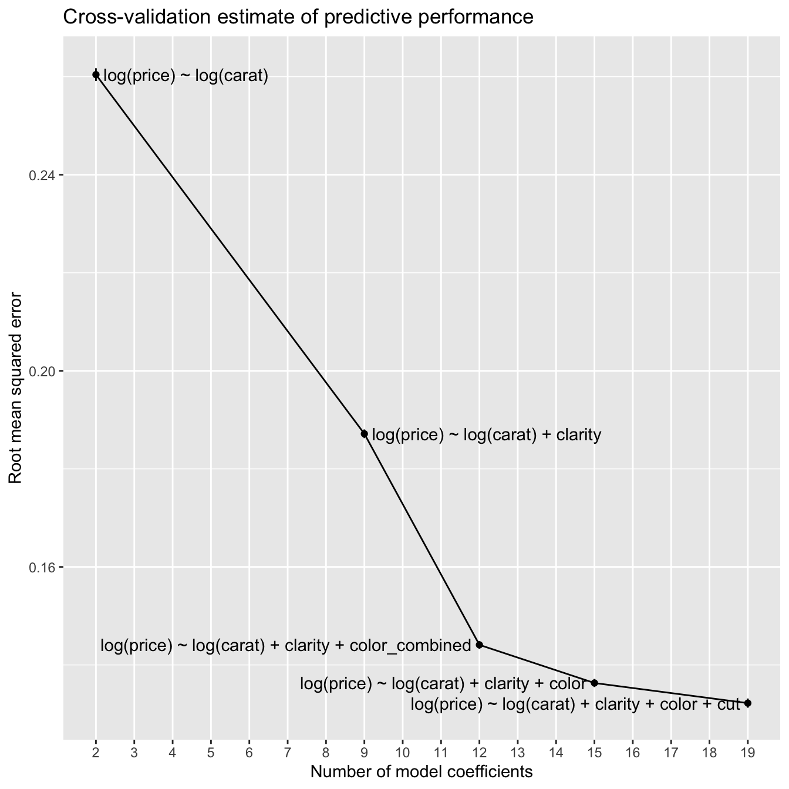
With the blood pressure models, the predictive performance worsened with increasing model complexity. In contrast, with the diamonds models, the estimated predictive performance improves with increasing model complexity. An explanation for this is the difference in the amount of data in the two datasets. The blood pressure data has 200 rows, whereas the diamonds data has 53,405 rows. The more data you have to work with, the greater the complexity of the models that you can typically use before the predictive performance degrades due to overfitting.
Let’s zoom in on the three models with the best predictive performance.
p +
coord_cartesian(ylim = c(NA, 0.15))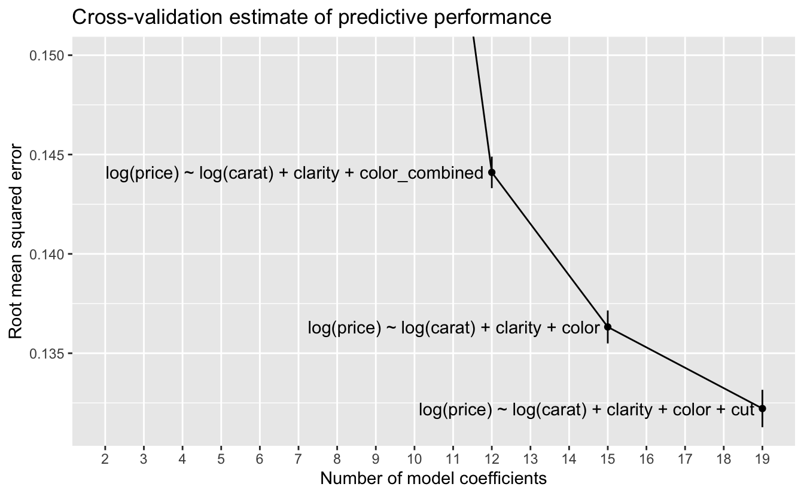
At this scale, we can see the error bars for one standard error on either side of the estimate. A rule of thumb for selecting a model when using cross-validation is to choose the model with the lowest complexity whose estimated predictive performance is within one standard error of the best predictive performance. In this case, no simpler model has a performance within one standard error of the model with the best performance, so we would choose the most complex model
log(price) ~ log(carat) + clarity + color + cut .
5.2.2 Bayesian modeling
Instead of using cross-validation, Bayesian modeling takes a different approach. When Stan fits a Bayesian model, the fitting process itself generates information that can be used to estimate the model’s predictive performance without having to refit the model multiple times on resampled data. The loo() function in the loo package provides an approximation to leave-one-out (LOO) cross-validation using just the information from a Stan model fit. LOO cross-validation is the special case of k-fold cross-validation when k = n, the number of rows in the data. In other words, LOO cross-validation would require fitting n models, each on all data except for a single point, and then testing each resulting model on the omitted point. loo() can estimate LOO cross-validation without having to fit any additional models.
Here’s the estimate using loo() of how the model produced by stan_glm() for our simplest function family would perform on new data.
set.seed(983)
model_loo <- function(formula, ...) {
stan_glm(as.formula(formula), data = df, refresh = 0) %>%
loo(...)
}
loo_1 <- model_loo(formulas$formula[1])
loo_1
#>
#> Computed from 4000 by 53405 log-likelihood matrix
#>
#> Estimate SE
#> elpd_loo -3931.4 190.0
#> p_loo 3.4 0.0
#> looic 7862.7 380.0
#> ------
#> Monte Carlo SE of elpd_loo is 0.0.
#>
#> All Pareto k estimates are good (k < 0.5).
#> See help('pareto-k-diagnostic') for details.elpd_loo is an estimate of the expected log predictive density (ELPD) – this is an estimate of the predictive performance of the model on new data, and we can use it to compare models from different function families. With ELPD, larger values indicate better estimated predictive performance.
The line
All Pareto k estimates are good (k < 0.5).
is a diagnostic for the estimation process. In this case, everything worked fine. If this were not the case, the message would recommend corrective action, such as calling loo() again with arguments other than the defaults.
With ELPD as our measure of estimated predictive performance, we’ll now calculate it for the remaining four function families we’re considering.
set.seed(983)
loo_2 <- model_loo(formulas$formula[2])
loo_2
#>
#> Computed from 4000 by 53405 log-likelihood matrix
#>
#> Estimate SE
#> elpd_loo 13713.2 187.7
#> p_loo 11.6 0.3
#> looic -27426.3 375.3
#> ------
#> Monte Carlo SE of elpd_loo is 0.1.
#>
#> All Pareto k estimates are good (k < 0.5).
#> See help('pareto-k-diagnostic') for details.The ELPD for model 2 is substantially better than that for model 1, so it would be the better choice.
set.seed(983)
loo_3 <- model_loo(formulas$formula[3])
loo_3
#>
#> Computed from 4000 by 53405 log-likelihood matrix
#>
#> Estimate SE
#> elpd_loo 27673.3 218.6
#> p_loo 15.6 0.5
#> looic -55346.7 437.2
#> ------
#> Monte Carlo SE of elpd_loo is 0.1.
#>
#> All Pareto k estimates are good (k < 0.5).
#> See help('pareto-k-diagnostic') for details.The ELPD for the model 3 is substantially better than that for model 2.
set.seed(983)
loo_4 <- model_loo(formulas$formula[4])
loo_4
#>
#> Computed from 4000 by 53405 log-likelihood matrix
#>
#> Estimate SE
#> elpd_loo 30636.0 226.5
#> p_loo 19.0 0.7
#> looic -61272.0 453.1
#> ------
#> Monte Carlo SE of elpd_loo is 0.1.
#>
#> All Pareto k estimates are good (k < 0.5).
#> See help('pareto-k-diagnostic') for details.The ELPD for the model 4 is an improvement over that for model 3, but not as much of an improvement as with the earlier models.
set.seed(983)
loo_5 <- model_loo(formulas$formula[5])
loo_5
#>
#> Computed from 4000 by 53405 log-likelihood matrix
#>
#> Estimate SE
#> elpd_loo 32266.8 245.7
#> p_loo 24.0 1.0
#> looic -64533.6 491.4
#> ------
#> Monte Carlo SE of elpd_loo is 0.1.
#>
#> All Pareto k estimates are good (k < 0.5).
#> See help('pareto-k-diagnostic') for details.The ELPD for model 5 is again a modest improvement over that for model 4.
We’ll gather the results into a tibble.
loos <- list(loo_1, loo_2, loo_3, loo_4, loo_5)
elpd_stan_glm <-
formulas %>%
mutate(
elpd = map_dbl(loos, ~ pluck(., "estimates")["elpd_loo", "Estimate"]),
elpd_se = map_dbl(loos, ~ pluck(., "estimates")["elpd_loo", "SE"])
)
knitr::kable(elpd_stan_glm)| formula | n_coefs | elpd | elpd_se |
|---|---|---|---|
| log(price) ~ log(carat) | 2 | -3931 | 190 |
| log(price) ~ log(carat) + clarity | 9 | 13713 | 188 |
| log(price) ~ log(carat) + clarity + color_combined | 12 | 27673 | 219 |
| log(price) ~ log(carat) + clarity + color | 15 | 30636 | 227 |
| log(price) ~ log(carat) + clarity + color + cut | 19 | 32267 | 246 |
Let’s again visualize the results.
p <-
elpd_stan_glm %>%
ggplot(aes(n_coefs, elpd)) +
geom_line() +
geom_linerange(aes(ymin = elpd - elpd_se, ymax = elpd + elpd_se)) +
geom_point() +
geom_text(
aes(label = formula),
hjust = c(0, 0, 1, 1, 1),
nudge_x = 0.2 * c(1, 1, -1, -1, -1)
) +
scale_x_continuous(
breaks = seq(min(elpd_stan_glm$n_coefs), max(elpd_stan_glm$n_coefs)),
minor_breaks = NULL
) +
labs(
title = "Bayesian LOO estimate of predictive performance",
x = "Number of model coefficients",
y = "Expected log predictive density"
)
p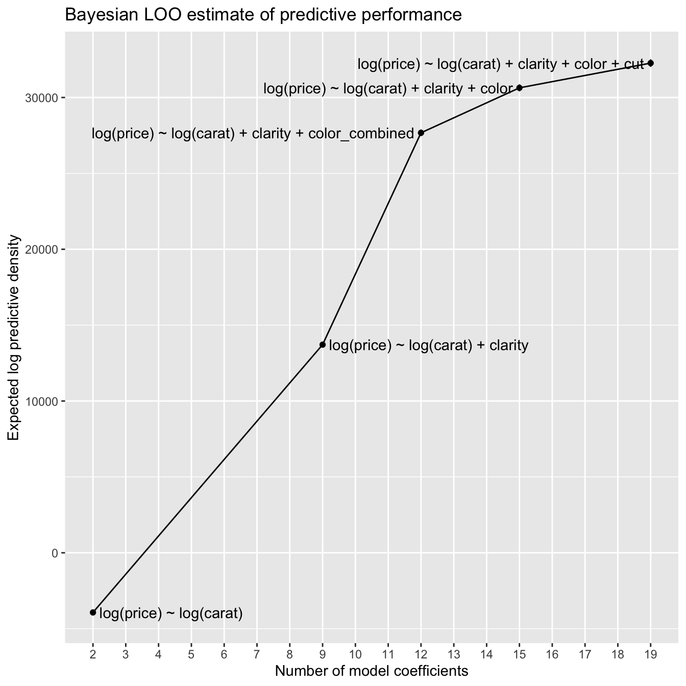
This plot looks very much like the cross-validation plot, though flipped vertically, since larger ELPD is better while smaller RSME is better.
Let’s again zoom in on the three models with the best predictive performance.
p +
coord_cartesian(ylim = c(25000, NA))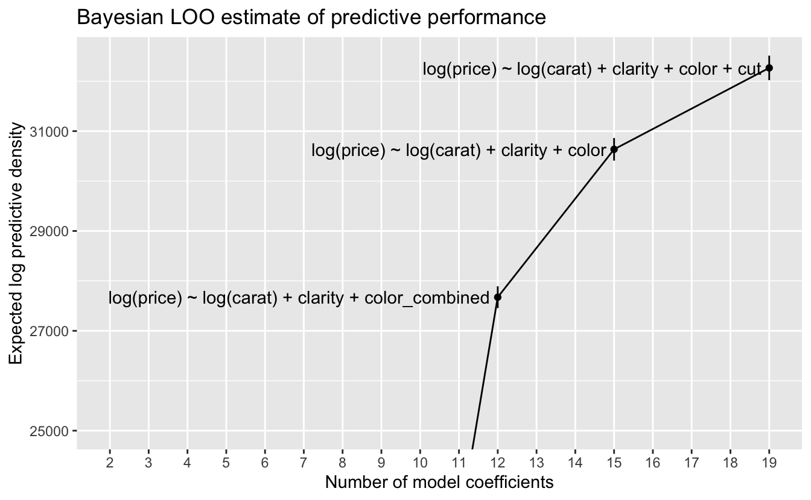
At this scale, we can again see the error bars for one standard error on either side of the estimate. Using our rule of thumb of choosing the model with the lowest complexity whose estimated predictive performance is within one standard error of the best performance, we again choose the most complex model
log(price) ~ log(carat) + clarity + color + cut .
5.3 Final model
The classical and Bayesian approaches both led us to select the same function family. Here are the resulting models.
fit_lm <- lm(log(price) ~ log(carat) + clarity + color + cut, data = df)set.seed(983)
fit_stan_glm <-
stan_glm(
log(price) ~ log(carat) + clarity + color + cut,
data = df,
refresh = 0
)We can compare the coefficients in the two models.
coef(fit_lm) - coef(fit_stan_glm)
#> (Intercept) log(carat) claritySI2 claritySI1 clarityVS2 clarityVS1
#> 8.47e-07 -1.76e-05 -2.13e-04 -1.73e-04 -1.27e-04 -2.33e-04
#> clarityVVS2 clarityVVS1 clarityIF colorI colorH colorG
#> -1.44e-04 -2.14e-04 -9.50e-05 3.54e-05 5.40e-05 5.50e-05
#> colorF colorE colorD cutGood cutVery Good cutPremium
#> 2.69e-05 6.76e-05 -1.47e-05 1.27e-04 1.04e-04 1.30e-04
#> cutIdeal
#> 5.90e-05The coefficients of the two models are very close. In the following, we’ll focus on the model from stan_glm(), since it provides more information.
Let’s first look at the coefficients.
print(fit_stan_glm, digits = 3)
#> stan_glm
#> family: gaussian [identity]
#> formula: log(price) ~ log(carat) + clarity + color + cut
#> observations: 53405
#> predictors: 19
#> ------
#> Median MAD_SD
#> (Intercept) 7.381 0.006
#> log(carat) 1.889 0.001
#> claritySI2 0.400 0.005
#> claritySI1 0.563 0.005
#> clarityVS2 0.713 0.005
#> clarityVS1 0.784 0.006
#> clarityVVS2 0.919 0.006
#> clarityVVS1 0.992 0.006
#> clarityIF 1.087 0.006
#> colorI 0.136 0.003
#> colorH 0.259 0.003
#> colorG 0.348 0.003
#> colorF 0.413 0.003
#> colorE 0.455 0.003
#> colorD 0.509 0.003
#> cutGood 0.078 0.004
#> cutVery Good 0.115 0.004
#> cutPremium 0.139 0.004
#> cutIdeal 0.160 0.004
#>
#> Auxiliary parameter(s):
#> Median MAD_SD
#> sigma 0.132 0.000
#>
#> ------
#> * For help interpreting the printed output see ?print.stanreg
#> * For info on the priors used see ?prior_summary.stanregThe (Intercept) coefficient implies that a one-carat diamond with the lowest quality clarity, color and cut would have a price of approximately $exp(7.381), or $1,605. This is close to the minimum price in the data of one-carat diamonds.
df %>%
filter(near(carat, 1)) %>%
pull(price) %>%
min()
#> [1] 1681The log(carat) coefficient implies that the power law for carat has a power of approximately 1.89.
For the factors clarity, color, and cut, the levels are in the order of increasing quality. For example, IF is the highest quality of clarity, and D is the highest quality of color. We can see that the coefficients for the factor levels increase with increasing quality, as expected. The parameters for color level I and for all cut levels are comparable in size to sigma, an estimate of the standard deviation for the residuals, so we should not assume that these parameters are very reliable measures. In our EDA, we saw that diamonds with high-quality cut are common, and cut appears to have the least impact of the four Cs on price.
By applying log() to both sides of the formula defining our function family, we obtain the function
price = 1605 * g_clarity(clarity) * g_color(color) * g_cut(cut) * carat^1.89
where, for example,
g_cut <- function(cut) {
case_when(
cut == "Fair" ~ 1,
cut == "Good" ~ 1.08,
cut == "Very Good" ~ 1.12,
cut == "Premium" ~ 1.15,
cut == "Ideal" ~ 1.17
)
}Here each value is exp() applied to the parameter value. The omitted level for each factor, Fair for cut, is included in the intercept, so we use the value of exp(0) = 1.
Let’s look at the multipliers associated with the factor levels.
v <-
coef(fit_stan_glm) %>%
enframe() %>%
filter(str_detect(name, "^c")) %>%
extract(
col = name,
into = c("var", "level"),
regex = "([a-z]+)([A-Z]+.*)"
) %>%
mutate(value = exp(value))
v %>%
ggplot(aes(var, value)) +
geom_hline(yintercept = 1, size = 1, color = "white") +
geom_point() +
ggrepel::geom_text_repel(
aes(label = level),
nudge_x = 0.1,
direction = "y",
hjust = 0,
min.segment.length = 2
) +
coord_cartesian(ylim = c(0.75, NA)) +
labs(
title = "Multipliers associated with different diamond quality levels",
x = NULL,
y = "Multiplier"
)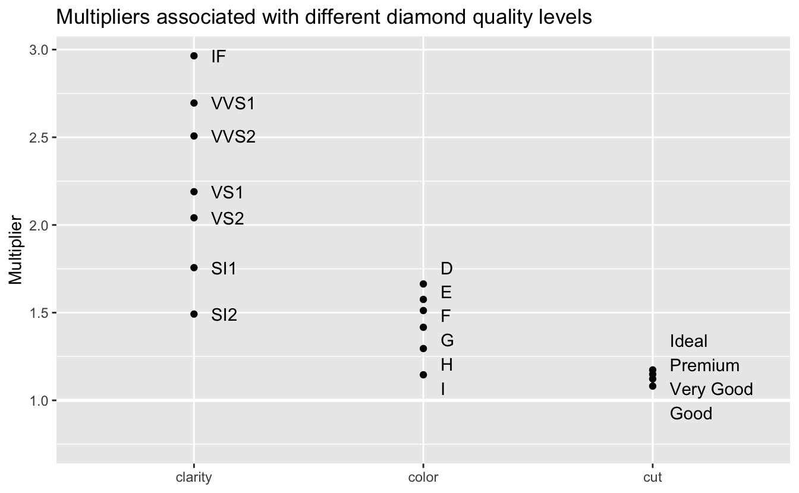
As we saw in our EDA, clarity has the greatest impact on price, followed by color and cut. The model predicts that the price of diamonds with the best clarity, IF, will be 2.96 times the price for comparable diamonds of the worst clarity. The best color, D, has a multiplier of 1.66. And the best cut, Ideal, has a multiplier of only 1.17. The relatively small effect of cut could be seen during model selection. Adding cut to the model improved performance, but much less than adding clarity or color.
Just as we did in Chapter 4, let’s check the residuals of the model by plotting the error ratios.
v <-
df %>%
mutate(
pred = predict(fit_stan_glm) %>% exp(),
error_ratio = price / pred
)
v %>%
ggplot(aes(pred, error_ratio)) +
geom_point(alpha = 0.01) +
geom_hline(yintercept = 1, size = 1, color = "white") +
geom_smooth() +
coord_cartesian(ylim = c(0, 2)) +
scale_x_log10() +
labs(
title = "Ratios of actual price / predicted price",
x = "Predicted price",
y = "Error ratio"
)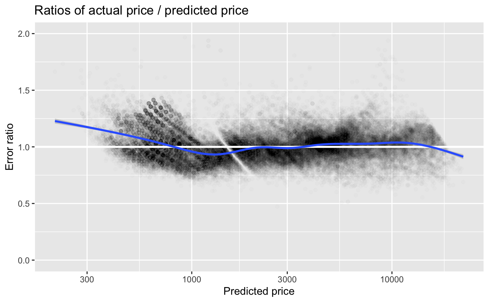
The first takeaway is that the error ratios are much closer to 1 for our final model than they were for the simple model we looked at in Chapter 4. For predicted prices less than about $800, we again see that the actual price is higher than the predicted price. For higher predicted prices, the smooth line is fairly close to 1.
Let’s look at the distribution of error_ratio.
quantile(v$error_ratio, probs = c(0.025, 0.05, 0.5, 0.95, 0.975))
#> 2.5% 5% 50% 95% 97.5%
#> 0.776 0.810 0.999 1.249 1.306The median error_ratio is very close to 1. Approximately 95% of the diamonds are within the range of 22% less and 31% more than the predictions. This is a much tighter range than with the simplest model. Many other factors, such as regional variation, affect price. So it is rather surprising that we can make such accurate predictions with only four predictor variables.
5.4 Summary
In model selection:
- The greater the complexity of a model, the greater the likelihood that it will overfit its training data and not generalize and work well with new data.
- To avoid overfitting and to select models that optimize predictive performance, we need to estimate the predictive performance on new data.
- Classical modeling typically uses cross-validation to estimate predictive performance.
- Bayesian modeling can estimate predictive performance directly from the initial modeling process without having to fit additional models as with cross-validation.
5.5 To learn more
Data modeling is a very large subject, and we’ve only provided a brief overview of the process and some useful tools and packages. Here are ways to learn more.
As we’ve seen, in supervised learning where the goal is to make accurate predictions, it is important to understand your data, properly prepare your data, and then explore possible function families with which to model it. A good resource to learn more about this process is Kuhn and Johnson, Feature Engineering and Selection.
We used some functions from the tidymodels ecosystem of R packages for modeling. A good source to go deeper is Kuhn and Silge, Tidy Modeling with R.
A good introduction to Bayesian modeling is Gelman, Hill, and Vehtari, Regression and Other Stories. Gelman and Vehtari are active in the Stan project, and the book uses stan_glm() for both linear and other general linear models. Tidyverse implementations of examples from the book are available here. To go deeper into the workflow of Bayesian data analysis and modeling see Gelman, et al., Bayesian Workflow.